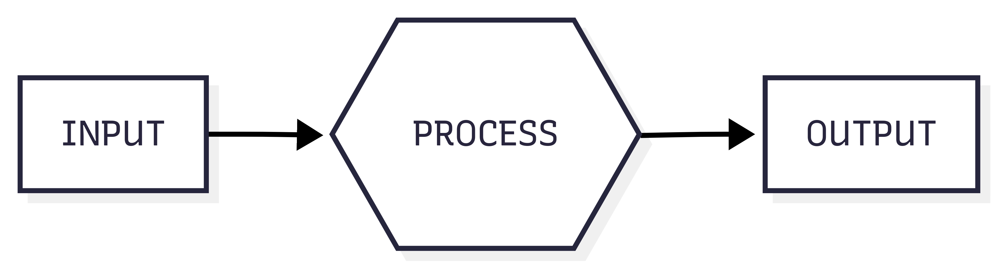
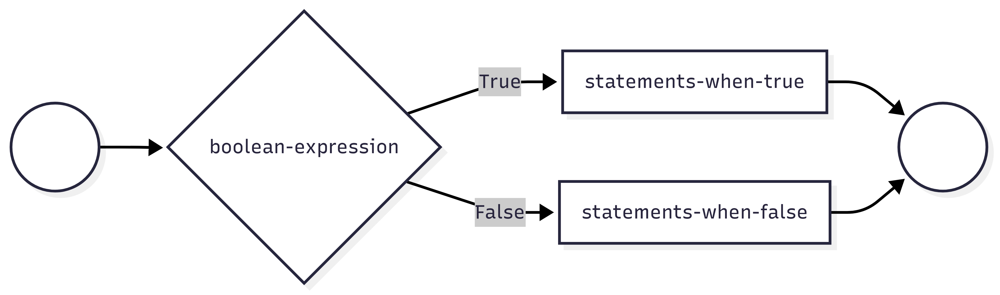
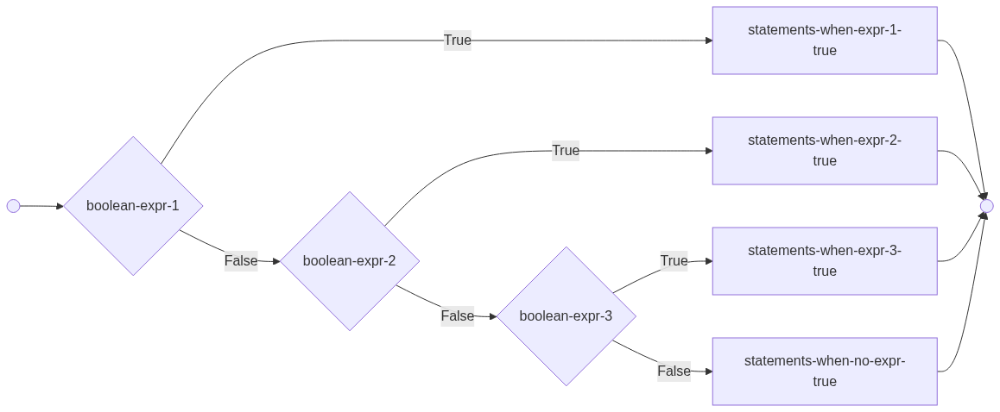

x = input("Enter something: ")1. Input, output, variables, types, conditionals
Input => Process => Output
- Identify the problem inputs (requirements)
- Identify the problem outputs (results)
- Write an algorithm to transform inputs to outputs.
- If you don’t know how to do a step… research it!

Python input and output
print() does output
input() does input, returns input so you must assign it to a variable
print(x)F-Strings
- F-Strings are Python’s answer to string interpolation.
- This replaces the variable name with its value within a string.
- Called an F-string because the
ftells Python to interpolate the string.
name = 'George'
print("{name} was curious.")
print(f"{name} was curious."){name} was curious.
George was curious.Variables
- Variables are named areas of computer memory for storing data.
- The name can be anything but should make symbolic sense to the programmer.
- We write to the variable’s memory location with the assignment statement (=)
- We read from the variable by calling its name.
- Variable names must begin with a letter or _ and must only contain letters, numbers or _.
Variables are of a Specific Type
| Type | Purpose | Examples |
|---|---|---|
int
|
Numeric type for integers only | 45, -10 |
float
|
Numeric type floating point numbers | 45, -10 |
bool
|
True or False values | True, False |
str
|
Characters and text | “A”, ‘Mike’ |
Type Detection and Conversion
| Python Function | What It Does | Example of Use |
|---|---|---|
type(n)
|
Returns the current type of n |
type(13) == int
|
int(n)
|
Converts n to type int |
int(“45”) == 45
|
float(n)
|
Converts n to type float |
float(45) == 45.0
|
str(n)
|
Converts n to type str |
str(4.0) == ‘4.0’
|
Programmatic Expressions
Programmatic Expressions contain operators and operands. They evaluate to a value, preserving type:
print(2 + 2)
print(2.0 + 2)
print("sh" + 'ip')
print('hi' + 2) # error4
4.0
ship--------------------------------------------------------------------------- TypeError Traceback (most recent call last) Cell In[2], line 4 2 print(2.0 + 2) 3 print("sh" + 'ip') ----> 4 print('hi' + 2) # error TypeError: can only concatenate str (not "int") to str
Arithmetic Operators
| Operator | What it Does | Example of Use |
|---|---|---|
+
|
Addition or string concenation |
3 + 4 == 7
|
-
|
Subtraction |
4 - 3 == 1
|
*
|
Multiplication |
3 * 4 == 12
|
/
|
Division |
4 / 3 == 1.33333
|
//
|
Intger division (quotent) |
13 // 3 == 4
|
%
|
Modulo (remainder) |
13 % 3 == 1
|
( )
|
Force an order of operations |
2 * (3 + 4) == 14
|
Program Flow Control with IF
- The IF statement is used to branch your code based on a Boolean expression.
if boolean-expression:
statements-when-true
else:
statemrnts-when-false
Python’s Relational Operators
| Operator | What it does | Examples |
|---|---|---|
>
|
Greater than | 4>2 (True) |
<
|
Less than | 4<2 (False) |
==
|
Equal To | 4==2 (False) |
!=
|
Not Equal To | 4!=2 (True) |
>=
|
Greater Than or Equal To | 4>=2 (True) |
<=
|
Less Than or Equal To | 4<=2 (True) |
Expressions consisting of relational operators evaluate to a Boolean value
Python’s Logical Operators
| Operator | What it does | Examples |
|---|---|---|
and
|
True only when both are True | 4>2 and 4<5 (True) |
or
|
False only when both are False | 4<2 or 4==4 (True) |
not
|
Negation(Opposite) | not 4==2 (True) |
in
|
Set operator | 4 in [2,4,7] (True) |
Multiple Decisions: IF ladder
Use elif to make more than one decision in your if statement. Only one code block within the ladder is executed.
if boolean-expression1:
statements-when-exp1-true
elif boolean-expression2:
statements-when-exp2-true
elif boolean-expression3:
statements-when-exp3-true
else:
statements-none-are-true
#Elif versus multiple ifs...
# One decision or multiple decisions.
x = int(input("enter an integer"))
# one decision
if x>10:
print("A:bigger than 10")
elif x>20:
print("A:bigger than 20")
# Multiple decisions
if x>10:
print("B:bigger than 10")
if x>20:
print("B:bigger than 20")